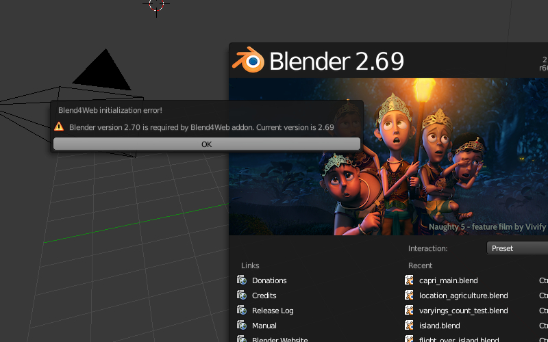

The Addon¶
Initialization Errors¶
Initialization errors can arise upon installation of the addon or when a scene is opened in Blender. In this case a dialog window with the error description is showed.
{kind=link}
Error message |
Cause |
|---|---|
| Blend4Web initialization error! Addon is not compatible with the PLATFORM platform. | The Blend4Web addon is not compatible with the PLATFORM platform. |
| Warning: Blender version mismatch. Blender VER_REQUIRED is recommended for the Blend4Web addon. Current version is VER_CURRENT. | Warning about possible incompatibility with the current Blender version. It is recommended to use VER_REQUIRED Blender version. The current version is VER_CURRENT. |
Critical Export Errors¶
In case of export errors a BLEND4WEB EXPORT ERROR dialog box describing of the problem appears:
COMPONENT - type of component (object, mesh, material, texture etc) that has caused the export error.
NAME - component name.
ERROR - short description of the occured problem.

Error message |
Cause |
|---|---|
| Dupli group error; Objects from the GROUP_NAME dupli group on the OBJECT_NAME object cannot be exported | None of the objects in the GROUP_NAME group which were selected for duplication on the OBJECT_NAME object can be exported. Permission to export at least one object of the group, or to remove the duplication of the group is required. |
| Export to different disk is forbidden | Export to a directory located on a different disk is forbidden |
| Incompatible meshes; Check MESH_NAME1 and MESH_NAME2 UV Maps/ Vertex colors | There are two meshes with the same material. Such meshes are merged automatically into one by the engine with the purpose of optimization, and so they should have the same number of UV Maps and Vertex Colors. |
| Incompatible objects with a shared mesh; The OBJECT_NAME object has both vertex groups and a shared mesh | Export of an object with both a shared mesh and vertex groups is not allowed. Exceptions: export is possible if an object has the Apply modifiers, Export vertex animation, Export edited normals options turned on (because in these cases a full copying of meshes occurs). |
| Incomplete mesh; Dynamic grass vertex colors required by material settings | The Dynamic grass size and/or Dynamic grass color options are used by the special terrain material but the mesh has no vertex colors with such names. |
| Incomplete mesh; Material slot is empty | Material slot is empty. |
| Incomplete mesh; No UV in mesh with UV-textured material | In the material of the mesh there are textures with texture coordinates type UV, but the mesh lacks UV map layers. |
| Incomplete mesh; Material settings require vertex colors | The Vertex Color Paint option is enabled for the mesh material, but the mesh has no vertex color layers. |
| Incomplete vehicle. The NAME vehicle doesn’t have any chassis or hull | The modelled NAME vehicle is not complete as it should contain a Chassis or a Hull element. |
| Incomplete vehicle. The NAME vehicle requires at least one bob | The modelled NAME vehicle is not complete as it should contain at least one Bob element. |
| Incomplete vehicle. The NAME vehicle requires at least one wheel | The modelled NAME vehicle is not complete as it should contain at least one Wheel element. |
| Incorrect mesh; Wrong group indices | The mesh has vertices assigned to the non-existing vertex group. |
| Incorrect vertex animation; Object has no vertex animation | The object’s vertex animation export option is on, but there is no vertex animation. |
| Incorrect vertex animation; Unbaked “ANIM_NAME” vertex animation | Vertex animation export is turned on for the mesh, but the ANIM_NAME animation doesn’t have any frames. |
| Loading of resources from different disk is forbidden | Loading of resources from different disk is forbidden. |
| The material has a normal map but doesn’t have any material nodes | The node material uses Normal Mapping, but has no Material node. |
| The mesh has a UV map but has no exported material | The mesh has a UV map layer but has no material for export. |
| The mesh has a vertex color layer but has no exported material | The mesh has a vertex color layer but has no material for export. |
| Missing lamp | There should be at least one light source in the scene. |
| No such file or directory | The file or directory does not exist. |
| Node material invalid; Check sockets compatibility: FROM_NODE with TO_NODE | Node material error: the input and output types of the link between the FROM_NODE and TO_NODE nodes should match. |
| Object constraint has no target | The Target Object property for the object constraint (on the Object Constraints tab) was not set. |
| Object data not available; Check the “Do not export” flag on the OBJECT_NAME data | The object data is not available. This error appears particularly when the Do not export property is set under the Object Data tab for the object being exported. |
| Object-parent relation is not supported; Clear the parent’s inverse transform | When using parenting it’s required to reset transform for the child object using the Object > Parent > Clear Parent Inverse operator (Alt-P). |
| Particle system error; Dupli group isn’t specified | Particle system error: no group is selected as a particle. |
| Particle system error; Dupli object isn’t specified | Particle system error: no object is selected as a particle. |
| Particle system error; Dupli object OBJECT_NAME doesn’t export | The OBJECT_NAME object which is selected as a particle can not be exported (the Do not export checkbox is set). |
| Particle system error; The GROUP_NAME dupli group contains no valid object for export | The GROUP_NAME dupli group which is selected as a particle contains no valid object for export. Either such objects have the Do not export checkbox enabled or the types of the objects are unsuitable. Supported object types: MESH. |
| Particle system error; The “NAME” vertex color specified in the from field is missing in the last of the “OBJECT_NAME” object’s vertex colors | The NAME vertex color is specified in the from field but it not present in the OBJECT_NAME emitter. |
| Particle system error; The “NAME” vertex color specified in the “to field is missing in the “OBJECT_NAME” object (“GROUP_NAME” dupli group) | The NAME vertex color is specified in the to field but it is not present in the OBJECT_NAME object of the GROUP_NAME group which is selected as a particle. |
| Particle system error; The “NAME” vertex color specified in the to field is missing in the list of the “OBJECT_NAME” object’s vertex colors | The NAME vertex color is specified in the to field but it is not present in the OBJECT_NAME object which is selected as a particle. |
| Particle system error; Wrong dupli object type TYPE_NAME | An object of unsuitable type is selected for the particle. Supported types: MESH. |
| Permission denied | No access rights to the current directory. |
| Wind bending: vertex colors weren’t properly assigned | Wind bending parameters setup: it’s required to specify the names of either all vertex color layers (Main stiffness (A), Leaves stiffness (R), Leaves phase (G), Overall stiffness (B)), or of the main one only (Main stiffness (A)), or of none of them. |
| Wind bending: not all vertex colors exist | Wind bending parameters setup: all specified vertex color layers should exist. |
| Wrong edited normals count; It doesn’t match with the mesh vertices count | The number of edited normals does not match the number of the mesh vertices. Execute Clean Up or Save in the B4W Vertex Normals Editor panel. |
| Wrong overridden bounding box; Check the mesh’s bounding box values | Wrong dimensions are specified when overriding the mesh’s BoundingBox: minimum value is greater than maximum value for at least one of the dimensions. |
| Wrong vertex animation vertices count; It doesn’t match with the mesh vertices count for “ANIM_NAME” | Vertex animation export is enabled but the number of vertices in the baked ANIM_NAME animation frames does not match the mesh vertices number. Possible solution is to “re-bake” the animation. |
Non-Critical Export Errors¶
In contrast to the above-listed critical export errors, these errors don’t prohibit the export, but can make scenes displayed incorrectly. These messages can be viewed in the browser console (opens with F12) when a scene is loaded. The message (colored red) looks like this:
EXPORT ERROR: Error message

Error message |
Cause |
|---|---|
| The NAME action has decimal frames. Converted to integer. | The NAME action has decimal frames. Converted to integer. |
| The NAME armature modifier has no armature object or it is not exported. Modifier removed. | The NAME Armature modifier has no armature object or it is not exported. Modifier removed. |
| The NAME curve modifier has no curve object. Modifier removed. | The NAME curve modifier has no object. Modifier removed. |
| The NAME curve modifier has unsupported curve object. Modifier removed. | The NAME curve modifier has unsupported object. Modifier removed. |
| Exported UV-layer is missing in node “GEOMETRY”. Material: NAME. | The UV layer specified in the GEOMETRY node is not exported (for UV texture coordinates). |
| Exported UV-layer is missing in texture NAME. [Material: NAME.] | Exported UV-layer is missing in the texture (for UV texture coordinates). |
| The NAME LAMP node has no lamp object. Material: NAME. | Wrong object specified in the NAME LAMP node. |
| Ignoring LODs after empty LOD for the NAME object. | All LOD objects that follow the empty slot were ignored (in the LOD objects list for the NAME object). |
| Incorrect NLA script, falling back to simple sequential NLA. | Incorrect NLA script, falling back to simple sequential NLA. |
| No image in the NAME texture. [Material: NAME.] | The texture has no image. |
| No texture in the texture slot. Material: NAME. | There is no texture in the material texture slot. |
| No texture in the NAME world texture slot. | No texture in the NAME world’s texture slot |
| No texture for the NAME particle settings texture slot. | No texture in the particle settings’ texture slot. |
| Only 2 UV textures are allowed for a mesh; The mesh has N UVs. | The engine supports up to 2 UV texture layers for each mesh. The number of UV layers for this mesh is N. |
| The NAME node is not supported. The NAME material will be rendered without nodes. Material: NAME. | The engine does not support the node with the this name, and so the node material will be turned off. Often this happens when Cycles nodes are used. |
| Using “REFRACTION” node with incorrect type of Alpha Blend. Material: NAME. | A node material with incorrect Alpha Blend property is used. Alpha sort, Alpha blend and Add are allowed when using a “REFRACTION” node. |
| Wrong texture coordinates type in texture NAME. [Material: NAME.] | The following coordinate types are supported for image textures: UV, Normal and Generated. |
Other Messages for Users’ Attention¶
These messages can be viewed in the browser console (opens with F12) when a scene is loaded. The message (colored yellow) looks like this:
EXPORT WARNING: Export message which requires the user's attention
Error message |
Cause |
|---|---|
| Missing active camera or wrong active camera object | There is no active camera on the scene (Camera property on the Scene tab). |
| Missing world or wrong active world object | There should be at least one world datablock in the scene. |